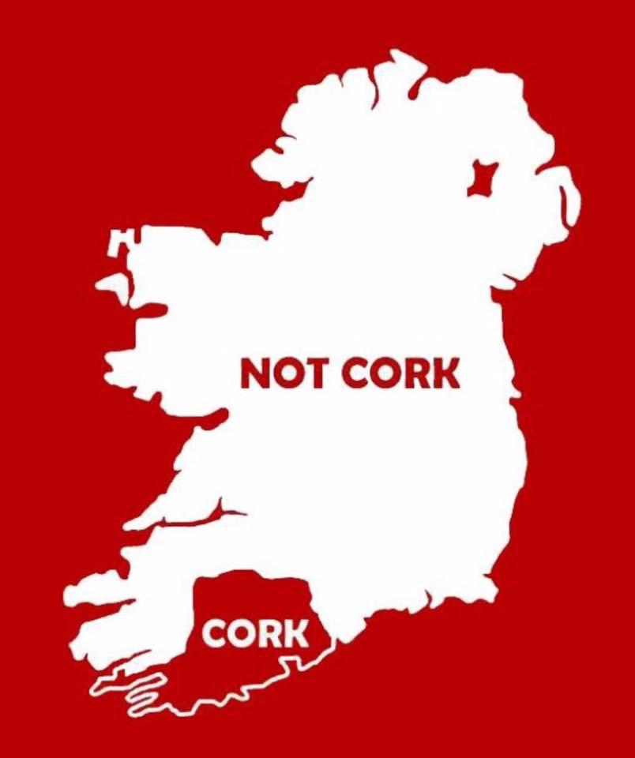

About me
Hello, I’m Nicholas Meade, but everyone calls me Nick. I am 31 years old, and I hail from Cork, Ireland. Before coming to HZ in Middelburg I spent the last 5 years working in the IT company Xanadu Consultancy Ltd., who are both the service provider and operator for the online gambling exchange Matchbook. While the role was a Client Support position for Matchbook, where I assisted users with account queries, issues, and troubleshooting, I was able to connect with members of the various IT teams in the company. It was thanks to this I was able to pick up skills that, while not directly involved in coding, networking, or the likes, it allowed for me to better understand how the systems operated and develop a more troubleshooting, and analytical-focused mindset that let me look at issues and interactions from a different perspective and come up with an efficient resolution where possible.
A bit about Cork
Cork, or Corcaigh in Irish, is the largest county situated in the southernmost part of Ireland.  Although Dublin may be official capital of Ireland, the proud people of Cork (jokingly) believe that Cork is in fact the Real Capital, calling it The People's Republic of Cork.
We are also known for our sarcasm and strange phrases such as saying "I will yeah" when asked to do something, which, depending on the tone of voice, means "No" or "Not a chance".
While I could go on about all the great things about the city and county, I'll limit myself to only a few:
Hobbies & Activities
Many of my hobbies would be common passive hobbies, like with many others, which let me kick back and unwind. These include:
- Reading
- Watching TV & Movies, mostly Animations, Sci-Fi, Fantasy, or even Gordon Ramsay creatively shouting at chefs in MasterChef & Hell's Kitchen.
- Playing Video Games
- Listening to Music

- Wandering, think walking but you pick a random direction and go! You only are in trouble when you enter somewhere where you're not supposed to be in, or you can't remember your way back...
- Collecting, building and playing Warhammer, a miniature tabletop game played globally.
Finally, for anyone who would like to experience the mixed bag that are the genres of music I listen too, I've made a Spotify playlist for you to browse below.